가스기사 (2020-06-06 기출문제)
1과목: 가스유체역학
1. 200℃의 공기가 흐를 때 정압이 200 kPa, 동압이 1 kPa 이면 공기의 속도(m/s)는? (단, 공기의 기체상수는 287 J/kg·K 이다.)
- 23.9
- 36.9
- 42.5
- 52.6
(정답률: 48%)

2. 밀도 1.2 kg/m3 의 기체가 직경 10cm인 관속을 20m/s 로 흐르고 있다. 관의 마찰걔수 0.02 라면 1m당 압력손실은 약 몇 Pa 인가?
- 24
- 36
- 48
- 54
(정답률: 55%)
3. 반지름 200mm, 높이 250mm인 실린더 내에 20kg의 유체가 차 있다. 유체의 밀도는 약 몇 kg/m3인가?
- 6.366
- 63.66
- 636.6
- 6366
(정답률: 63%)
4. 물이 내경 2cm인 원형관을 평균 유속 5cm/s로 흐르고 있다. 같은 유량이 내경 1cm인 관을 흐르면 평균 유속은?
- 1/2만큼 감소
- 2배로 증가
- 4배로 증가
- 변함없다.
(정답률: 73%)
5. 압축성 유체가 그림과 같이 확산기를 통해 흐를 때 속도와 압력은 어떻게 되는가? (단, Ma는 마하수이다.)
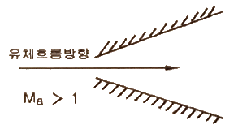
- 속도증가, 압력감소
- 속도감소, 압력증가
- 속도감소, 압력불변
- 속도불변, 압력증가
(정답률: 74%)
6. 수직 충격파는 다음 중 어떤 과정에 가장 가까운가?
- 비가역 과정
- 등엔트로피 과정
- 가역 과정
- 등압 및 등엔탈피 과정
(정답률: 59%)
7. 왕복 펌프 중 산, 알칼리액을 수송하는데 사용되는 펌프는?
- 격막 펌프
- 기어 펌프
- 플렌지 펌프
- 피스톤 펌프
(정답률: 60%)
8. 다음 중 대기압을 측정하는 계기는?
- 수은기압계
- 오리피스미터
- 로타미터
- 둑(weir)
(정답률: 78%)
9. 체적효율은 ηv, 피스톤 단면적을 A[m2], 행정을 S[m], 회전수를 n[rpm] 이라 할 때 실제 송출량 Q[m3/s]를 구하는 식은?
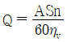
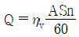
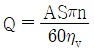
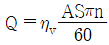
(정답률: 58%)
10. 아음속 등엔트로피 흐름의 확대 노즐에서의 변화로 옳은 것은?
- 압력 및 밀도는 감소한다.
- 속도 및 밀도는 증가한다.
- 속도는 증가하고, 밀도는 감소한다.
- 압력은 증가하고, 속드는 감소한다.
(정답률: 70%)
11. 다음 그림에서와 같이 관속으로 물이 흐르고 있다. A점과 B 점에서의 유속은 몇 m/s인가?
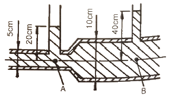
- uA = 2.045, uB = 1.022
- uA = 2.045, uB = 0.511
- uA = 7.919, uB = 1.980
- uA = 3.960, uB = 1.980
(정답률: 68%)
12. 안지름 80cm인 관 속을 동점성계수 4stokes인 유체가 4m/s의 평균속도로 흐른다. 이 때 흐름의 종류는?
- 층류
- 난류
- 플러그 흐름
- 천이영역 흐름
(정답률: 51%)
13. 압축률이 5×10-5 cm2/kgf인 물 속에서의 음속은 몇 m/s 인가?
- 1400
- 1500
- 1600
- 1700
(정답률: 34%)
14. 다음 중 기체수송에 사용되는 기계로 가장 거리가 먼 것은?
- 팬
- 송풍기
- 압축기
- 펌프
(정답률: 77%)
15. 원관 중의 흐름이 층류일 경우 유량이 반경의 4제곱과 압력기울기 (P1-P2)/L에 비례하고 점도에 반비례한다는 법칙은?
- Hagen-Poiseuolle 법칙
- Reynolds 법칙
- Newton 법칙
- Fourier 법칙
(정답률: 78%)
16. 프란틀의 혼합길이(Prandtl mixing length)에 대한 설명으로 옳지 않은 것은?
- 난류 유동에 관련된다.
- 전단응력과 밀접한 관련이 있다.
- 벽면에서는 0 이다.
- 항상 일정한 값을 갖는다.
(정답률: 69%)
17. 그림과 같이 물이 흐르는 관에 U자 수은관을 설치하고, A지점과 B지점 사이의 수은 높이 차(h)를 측정하였더니 0.7m 이었다. 이때 A점과 B점 사이의 압력차는 약 몇 kPa 인가? (단, 수은의 비중은 13.6 이다.)(오류 신고가 접수된 문제입니다. 반드시 정답과 해설을 확인하시기 바랍니다.)
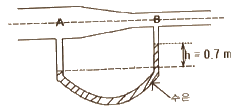
- 8.64
- 9.33
- 86.4
- 93.3
(정답률: 43%)
18. 실험실의 풍동에서 20℃의 공기로 실험을 할 때 마하각이 30° 이면 풍속은 몇 m/s가 되는가? (단, 공기의 비열비는 1.4 이다.)
- 278
- 364
- 512
- 686
(정답률: 42%)
19. SI 기본 단위에 해당하지 않는 것은?
- kg
- m
- W
- K
(정답률: 75%)
20. 안지름이 20cm의 관에 평균속도 20m/s 로 물이 흐르고 있다. 이때 유량은 얼마인가?
- 0.628 m3/s
- 6.280 m3/s
- 2.512 m3/s
- 0.251 m3/s
(정답률: 68%)
2과목: 연소공학
21. 기체연료를 미리 공기와 혼합시켜 놓고, 점화해서 연소하는 것으로 연소실 부하율을 높게 얻을 수 있는 연소방식은?
- 확산연소
- 예혼합연소
- 증발연소
- 분해연소
(정답률: 85%)
22. 기체연료의 연소형태에 해당하는 것은?
- 확산연소, 증발연소
- 예혼합연소, 증발연소
- 예혼합연소, 확산연소
- 예혼합연소, 분해연소
(정답률: 77%)
23. 저위발열량 93766 kJ/Sm3의 C3H8을 공기비 1.2로 연소시킬 때의 이론연소온도는 약 몇 K 인가? (단, 배기가스의 평균비열은 1.653 kJ/Sm3·K 이고 다른 조건은 무시한다.)
- 1735
- 1856
- 1919
- 2083
(정답률: 43%)
24. 확산연소에 대한 설명으로 옳지 않은 것은?
- 조작이 용이하다.
- 연소 부하율이 크다.
- 역화의 위험성이 적다.
- 화염의 안정범위가 넓다.
(정답률: 56%)
25. 공기비가 클 경우 연소에 미치는 영향이 아닌 것은?
- 연소실 온도가 낮아진다.
- 배기가스에 의한 열손실이 커진다.
- 연소가스 중의 질소산화물이 증가한다.
- 불완전연소에 의한 매연의 발생이 증가한다.
(정답률: 64%)
26. 사고를 일으키는 장치의 이상이나 운전자의 실수를 조합을 연역적으로 분석하는 정량적인 위험성평가 방법은?
- 결함수 분석법(FTA)
- 사건수 분석법(ETA)
- 위험과 운전 분석법(HAZOP)
- 작업자 실수 분석법(HEA)
(정답률: 61%)
27. 분진폭발의 위험성을 방지하기 위한 조건으로 틀린 것은?
- 환기장치는 공동 집진기를 사용한다.
- 분진이 발생하는 곳에 습식 스크러버를 설치한다.
- 분진 취급 공정을 습식으로 운영한다.
- 정기적으로 분진 퇴적물을 제거한다.
(정답률: 70%)
28. 달톤(Dalton)의 분압법칙에 대하여 옳게 표한한 것은?
- 혼합기체의 온도는 일정하다.
- 혼합기체의 체적은 각 성분의 체적의 합과 같다.
- 혼합기체의 기체상수는 각 성분의 기체상수의 합과 같다.
- 혼합기체의 압력은 각 성분(기체)의 분압의 합과 같다.
(정답률: 71%)
29. 다음 중 공기와 혼합기체를 만들었을 때 최대 연소속도가 가장 빠른 기체연료는?
- 아세틸렌
- 메틸알코올
- 톨루엔
- 등유
(정답률: 75%)
30. 프로판가스 1m3를 완전 연소시키는데 필요한 이론 공기량은 약 몇 m3인가? (단, 산소는 공기 중에 20% 함유한다.)
- 10
- 15
- 20
- 25
(정답률: 56%)
31. 제1종 영구기관을 바르게 표현한 것은?
- 외부로부터 에너지원을 공급받지 않고 영구히 일을 할 수 있는 기관
- 공급된 에너지보다 더 많은 에너지를 낼 수 있는 기관
- 지금까지 개발된 기관 중에서 효율이 가장 좋은 기관
- 열역학 제2법칙에 위배되는 기관
(정답률: 65%)
32. 프로판가스의 연소과정에서 발생한 열량은 50232 MJ/kg 이었다. 연소 시 발생한 수증기의 잠열이 8372 MJ/kg 이면 프로판가스의 저발열량 기준 연소효율은 약 몇 % 인가? (단, 연소에 사용된 프로판가스의 저발열량은 46046 MJ/kg 이다.)
- 87
- 91
- 93
- 96
(정답률: 64%)
33. 난류 예혼합화염과 층류 예혼합화염에 대한 특징을 설명한 것으로 옳지 않은 것은?
- 난류 예혼합화염의 연소속도는 층류 예혼합화염의 수배 내지 수십배에 달한다.
- 난류 예혼합화염의 두께는 수 밀리미터에서 수십 밀리미터에 달하는 경우가 있다.
- 난류 예혼합화염은 층류 예혼합화염에 비하여 화염의 휘도가 낮다.
- 난류 예혼합화염의 경우 그 배후에 다량의 미연소분이 잔존한다.
(정답률: 67%)
34. 인화(Pilot ignition)에 대한 설명으로 틀린 것은?
- 점화원이 있는 조건하에서 점화되어 연소를 시작하는 것이다.
- 물체가 착화원 없이 불이 붙어 연소하는 것을 말한다.
- 연소를 시작하는 가장 낮은 온도를 인화점(flash point)이라 한다.
- 인화점은 공기 중에서 가연성 액체의 액면 가까이 생기는 가연성 증기가 작은 불꽃에 의하여 연소될 때의 가연성 물체의 최저 온도이다.
(정답률: 66%)
35. 오토 사이클의 열효율을 나타낸 식은? (단, η은 열효율, r는 압축비, k는 비열비이다.)
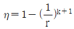
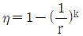
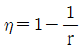
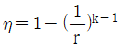
(정답률: 70%)
36. Fire ball에 의한 피해로 가장 거리가 먼 것은?
- 공기팽창에 의한 피해
- 탱크파열에 의한 피해
- 폭풍압에 의한 피해
- 복사열에 의한 피해
(정답률: 69%)
37. 다음 중 차원이 같은 것끼리 나열한 것은?
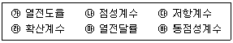
- ㉮, ㉯
- ㉰, ㉲
- ㉱, ㉳
- ㉲, ㉳
(정답률: 66%)
38. C3H8을 공기와 혼합하여 완전연소시킬 때 혼합기체 중 C3H8의 최대농도는 약 얼마인가? (단, 공기 중 산소는 20.9% 이다.)
- 3 vol%
- 4 vol%
- 5 vol%
- 6 vol%
(정답률: 59%)
39. 최대안전틈새의 범위가 가장 적은 가연성가스의 폭발 등급은?
- A
- B
- C
- D
(정답률: 70%)
40. 분자량이 30인 어떤 가스의 정압비열이 0.75 kJ/kg·K 이라고 가정할 때 이 가스의 비열비(k)는 약 얼마인가?
- 0.28
- 0.47
- 1.59
- 2.38
(정답률: 58%)
3과목: 가스설비
41. 다음 그림은 어떤 종류의 압축기인가?
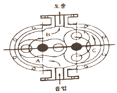
- 가동날개식
- 루트식
- 플런저식
- 나사식
(정답률: 72%)
42. 수소에 대한 설명으로 틀린 것은?
- 암모니아 합성의 원료로 사용된다.
- 열전달율이 적고 열에 불안정하다.
- 염소와의 혼합 기체에 일광을 쬐면 폭발한다.
- 모든 가스 중 가장 가벼워 확산속도도 가장 빠르다.
(정답률: 71%)
43. 가스조정기 중 2단 감압식 조정기의 장점이 아닌 것은?
- 조정기의 개수가 적어도 된다.
- 연소기구에 적합한 압력으로 공급할 수 있다.
- 배관의 관경을 비교적 작게 할 수 있다.
- 입상배관에 의한 압력강하를 보정할 수 있다.
(정답률: 68%)
44. 다음 수치를 가진 고압가스용 용접용기의 동판 두께는 약 몇 mm 인가?
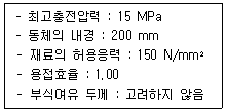
- 6.6
- 8.6
- 10.6
- 12.6
(정답률: 49%)
45. 인장시험 방법에 해당하는 것은?
- 올센법
- 샤르피법
- 아이조드법
- 파우더법
(정답률: 69%)
46. 대기압에서 1.5 MPa·g 까지 2단 압축기로 압축하는 경우 압축동력을 최소로 하기 위해서는 중간압력을 얼마로 하는 것이 좋은가?
- 0.2 MPa·g
- 0.3 MPa·g
- 0.5 MPa·g
- 0.75 MPa·g
(정답률: 44%)
47. 가연성 가스로서 폭발범위가 넓은 것부터 좁은 것의 순으로 바르게 나열한 것은?
- 아세틸렌-수소-일산화탄소-산화에틸렌
- 아세탈렌-산화에틸렌-수소-일산화탄소
- 아세틸렌-수소-산화에틸렌-일산화탄소
- 아세릴렌-일산화탄소-수소-산화에틸렌
(정답률: 59%)
48. 접촉분해 프로세스에서 다음 반응식에 의해 카본이 생성될 때 카본생성을 방지하는 방법은?
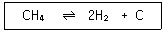
- 반응 온도를 낮게 반응 압력을 높게 한다.
- 반응 온도를 높게 반응 압력을 낮게 한다.
- 반응 온도와 반응 압력을 모두 낮게 한다.
- 반응 온도와 반응 압력을 모두 높게 한다.
(정답률: 54%)
49. 왕복식 압축기의 특징이 아닌 것은?
- 용적형이다.
- 압축효율이 높다.
- 용량조정의 범위가 넓다.
- 점검이 쉽고 설치면적이 적다.
(정답률: 60%)
50. 금속재료에 대한 설명으로 옳은 것으로만 짝지어진 것은?
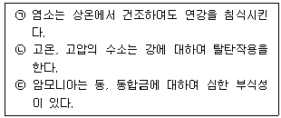
- ㉠
- ㉠, ㉡
- ㉡, ㉢
- ㉠, ㉡, ㉢
(정답률: 51%)
51. 압력용기에 해당하는 것은?
- 설계압력(MPa)과 내용적(m3)을 곱한 수치가 0.⑤인 용기
- 완충기 및 완충장치에 속하는 용기가 자동차에어백용 가스충전용기
- 압력에 관계없이 안지름, 폭, 길이 또는 단면의 지름이 100mm인 용기
- 펌프, 압축장치 및 축압기의 본체와 그 본체와 분리되지 아니하는 일체형 용기
(정답률: 57%)
52. 천연가스에 첨가하는 부취제의 성분으로 적합하지 않은 것은?
- THT(Tetra Hydro Thiophene)
- TBM(Tertiary Butyl Mercaptan)
- DMS(Dimethyl Sulfide)
- DMDS(Dimethyl Disulfide)
(정답률: 77%)
53. 지하매설물 탐사방법 중 주로 가스배관을 탐사하는 기법으로 전도체에 전기가 흐르면 도체 주변에 자장이 형성되는 원리를 이용한 탐사법은?
- 전자유도탐사법
- 레이다탐사법
- 음파탐사법
- 전기탐사법
(정답률: 76%)
54. 고압가스의 상태에 따른 분류가 아닌 것은?
- 압축가스
- 용해가스
- 액화가스
- 혼합가스
(정답률: 56%)
55. LP가스 장치에서 자동교체식 조정기를 사용할 경우의 장점에 해당되지 않는 것은?
- 잔액이 거의 없어질 때까지 소비된다.
- 용기교환주기의 폭을 좁힐 수 있어, 가스발생량이 적어진다.
- 전체 용기 수량이 수동교체식의 경우보다 적어도 된다.
- 가스소비시의 압력변동이 적다.
(정답률: 48%)
56. 용해 아세틸렌가스 정제장치는 어떤 가스를 주로 흡수, 제거하기 위하여 설치하는가?
- CO2, SO2
- H2S, PH3
- H2O, SiH4
- NH3, COCl2
(정답률: 52%)
57. 고압가스 용기의 재료에 사용되는 강의 성분 중 탄소, 인, 황의 함유량은 제한되어 있다. 이에 대한 설명으로 옳은 것은?
- 황은 적열취성이 원인이 된다.
- 인(P)은 될수록 많은 것이 좋다.
- 탄소량은 증가하면 인장강도와 충격치가 감소한다.
- 탄소량이 많으면 인장강도는 감소하고 충격치는 증가한다.
(정답률: 65%)
58. 액화 프로판 15L를 대기 중에 방출하였을 경우 약 몇 L의 기체가 되는가? (단, 액화 프로판의 액 밀도는 0.5 kg/L 이다.)
- 300 L
- 750 L
- 1500 L
- 3800 L
(정답률: 31%)
59. LNG Bunkering이란?
- LNG를 지하시설에 저장하는 기술 및 설비
- LNG 운반선에서 LNG인수기지로 급유하는 기술 및 설비
- LNG 인수기지에서 가스홀더로 이송하는 기술 및 설비
- LNG를 해상 선박에 급유하는 기술 및 설비
(정답률: 53%)
60. 염소가스(Cl2) 고압용기의 지름을 4배, 재료의 강도를 2배로 하면 용기의 두께는 얼마가 되는가?
- 0.5
- 1배
- 2배
- 4배
(정답률: 69%)
4과목: 가스안전관리
61. 가연성이면서 독성가스가 아닌 것은?
- 염화메탄
- 산화프로필렌
- 벤젠
- 시안화수소
(정답률: 53%)
62. 독성가스인 염소 500kg을 운반할 때 보호구를 차량의 승무원수에 상당한 수량을 휴대하여야 한다. 다음 중 휴대하지 않아도 되는 보호구는?
- 방독마스크
- 공기호흡기
- 보호의
- 보호장갑
(정답률: 75%)
63. 액화석유가스 저장탱크 지하 설치시의 시설기준으로 틀린 것은?
- 저장탱크 주위 빈 공간에는 세립분을 포함한 마른모래를 채운다.
- 저장탱크를 2개 이상 인접하여 설치하는 경우에는 상호간에 1m 이상의 거리를 유지한다.
- 점검구는 저장능력이 20톤 초과인 경우에는 2개소로 한다.
- 검지관은 직경 40A 이상으로 4개소 이상 설치한다.
(정답률: 51%)
64. 가스난방기는 상용압력의 1.5배 이상의 압력으로 실시하는 기밀시험에서 가스차단밸브를 통한 누출량이 얼마 이하가 되어야 하는가?
- 30 mL/h
- 50 mL/h
- 70 mL/h
- 90 mL/h
(정답률: 54%)
65. 고압가스특정제조시설의 내부반응 감시장치에 속하지 않는 것은?
- 온도감시장치
- 압력감시장치
- 유량감시장치
- 농도감시장치
(정답률: 63%)
66. 액화석유가스 저장탱크에 설치하는 폭발방지장치와 관련이 없는 것은?
- 비드
- 후프링
- 방파판
- 다공성 알루미늄 박판
(정답률: 58%)
67. 가스도매사업자의 공급관에 대한 설명으로 맞는 것은?
- 정압기지에서 대량수요자의 가스사용시설까지 이르는 배관
- 인수기지 부지경계에서 정압기까지 이르는 배관
- 인수가지 내에 설치되어 있는 배관
- 대량수요자 부지 내에 설치된 배관
(정답률: 61%)
68. 액화석유가스용 강제용기 스커트의 재료를 고압가스용기용 강판 및 강대 SG 295 이상의 재료로 제조하는 경우에는 내용적이 25L 이상, 50L 미만인 용기는 스커트의 두께를 얼마 이상으로 할 수 있는가?
- 2mm
- 3mm
- 3.6mm
- 5mm
(정답률: 49%)
69. 가연성가스가 폭발할 위험이 있는 농도에 도달할 우려가 있는 장소로서 “2종 장소”에 해당되지 않는 것은?
- 상용의 상태에서 가연성가스의 농도가 연속해서 폭발 하한계 이상으로 되는 장소
- 밀폐된 용기가 그 용기의 사고로 인해 파손될 경우에만 가스가 누출할 위험이 있는 장소
- 환기장치에 이상이나 사고가 발생한 경우에 가연성가스가 체류하여 위험하게 될 우려가 있는 장소
- 1종 장소의 주변에서 위험한 농도의 가연성가스가 종종 침입할 우려가 있는 장소
(정답률: 67%)
70. 고정식 압축도시가스 자동차 충전시설에서 가스누출검지경보장치의 검지경보장치 설치수량의 기준으로 틀린 것은?
- 펌프 주변 1개 이상
- 압축가스 설비 주변에 1개
- 충전설비 내부에 1개 이상
- 배관접속부마다 10m 이내에 1개
(정답률: 44%)
71. 가연성 가스의 제조설비 중 전기설비가 방폭성능 구조를 갖추지 아니하여도 되는 가연성 가스는?
- 암모니아
- 아세틸렌
- 염화에탄
- 아크릴알데히드
(정답률: 64%)
72. 특정설비에 설치하는 플랜지이음매로 허브플랜지를 사용하지 않아도 되는 것은?
- 설계압력이 2.5 MPa 인 특정설비
- 설계압력이 3.0 MPa 인 특정설비
- 설계압력이 2.0 MPa 이고 플랜지의 호칭 내경이 260 mm 특정설비
- 설계압력이 1.0 MPa 이고 플랜지의 호칭 내경이 300 mm 특정설비
(정답률: 49%)
73. 고압가스 특정제조시설에서 준내화구조 액화가스 저장탱크 온도상승방지설비 설치와 관련한 물분무살수장치 설치기준으로 적합한 것은?
- 표면적 1m2당 2.5L/분 이상
- 표면적 1m2당 3.5L/분 이상
- 표면적 1m2당 5L/분 이상
- 표면적 1m2당 8L/분 이상
(정답률: 40%)
74. 고압가스용 안전밸브 구조의 기준으로 틀린 것은?
- 안전밸브는 그 일부가 파손되었을 때 분출되지 않는 구조로 한다.
- 스프링의 조정나사는 자유로이 헐거워지지 않는 구조로 한다.
- 안전밸브는 압력을 마음대로 조정할 수 없도록 봉인할 수 있는 구조로 한다.
- 가연성 또는 독성가스용의 안전밸브는 개방형을 사용하지 않는다.
(정답률: 51%)
75. 용기의 도색 및 표시에 대한 설명으로 틀린 것은?
- 가연성가스 용기는 빨간색 테두리에 검정색 불꽃모양으로 표시한다.
- 내용적 2L 미만의 용기는 제조자가 정하는 바에 의한다.
- 독성가스 용기는 빨간색 테두리에 검정색 해골모양으로 표시한다.
- 선박용 LPG 용기는 용기의 하단부에 2cm의 백색 띠를 한 줄로 표시한다.
(정답률: 56%)
76. 고압가스 설비 중 플레어스택의 설치 높이는 플레어스택 바로 밑의 지표면에 미치는 복사열이 얼마 이하로 되도록 하여야 하는가?
- 2000 kcal/m2·h
- 3000 kcal/m2·h
- 4000 kcal/m2·h
- 5000 kcal/m2·h
(정답률: 65%)
77. 고압가스제조시설 사업소에서 안전관리자가 상주하는 현장사무소 상호간에 설치하는 통신설비가 아닌 것은?
- 인터폰
- 페이징설비
- 휴대용확성기
- 구내방송설비
(정답률: 65%)
78. 불화수소에 대한 설명으로 틀린 것은?
- 강산이다.
- 황색기체이다.
- 불연성기체이다.
- 자극적 냄새가 난다.
(정답률: 45%)
79. 액화 조연성가스를 차량에 적재운반하려고 한다. 운반책임자를 동승시켜야 할 기준은?
- 1000 kg 이상
- 3000 kg 이상
- 6000 kg 이상
- 12000 kg 이상
(정답률: 61%)
80. 고압가스 운반 중에 사고가 발생한 경우의 응급조치의 기준으로 틀린 것은?
- 부근의 화기를 없앤다.
- 독성가스가 누출된 경우에는 가스를 제독한다.
- 비상연락망에 따라 관계업소에 원조를 의뢰한다.
- 착화된 경우 용기파열 등의 위험이 있다고 인정될 때는 소화한다.
(정답률: 66%)
5과목: 가스계측기기
81. 단위계의 종류가 아닌 것은?
- 절대단위계
- 실제단위계
- 중력단위계
- 공학단위계
(정답률: 69%)
82. 5 kgf/cm2는 약 몇 mAq 인가?
- 0.5
- 5
- 50
- 500
(정답률: 53%)
83. 열팽창계수가 다른 두 금속을 붙여서 온도에 따라 휘어지는 정도의 차이로 온도를 측정하는 온도계는?
- 저항온도계
- 바이메탈온도계
- 열전대온도계
- 광고온계
(정답률: 71%)
84. 온도 계측기에 대한 설명으로 틀린 것은?
- 기체 온도계는 대표적인 1차 온도계이다.
- 접촉식의 온도계측에는 열팽창, 전기저항 변화 및 열기전력 등을 이용한다.
- 비접촉식 온도계는 방사온도계, 광온도계, 바이메탈 온도계 등이 있다.
- 유리온도계는 수은을 봉입한 것과 유기성 액체를 봉입한 것 등으로 구분한다.
(정답률: 48%)
85. 20℃에서 어떤 액체의 밀도를 측정하였다. 측정용기의 무게가 11.6125 g, 증류수를 채웠을때가 13.1682g, 시료 용액을 채웠을 때가 12.8749g 이라면 이 시료액체의 밀도는 약 몇 g/cm3 인가? (단, 20℃에서 물의 밀도는 0.99823 g/cm3 이다.)
- 0.791
- 0.801
- 0.810
- 0.820
(정답률: 44%)
86. 시험지에 의한 가스 검지법 중 시험지별 검지가스가 바르지 않게 연결된 것은?
- 연당지 - HCN
- KI전분지 - NO2
- 염화파라듐지 - CO
- 염화제일동 착염지 – C2H2
(정답률: 59%)
87. 물체의 탄성 변위량을 이용한 압력계가 아닌 것은?
- 부르동관 압력계
- 벨로우즈 압력계
- 다이어프램 압력계
- 링밸런스식 압력계
(정답률: 61%)
88. 자동조절계의 제어동작에 대한 설명으로 틀린 것은?
- 비례동작에 의한 조작신호의 변화를 적분동작만으로 일어나는데 필요한 시간을 적분시간이라고 한다.
- 조작신호가 동작신호의 미분값에 비례하는 것을 레이트 동작(rate action)이라고 한다.
- 매분 당 미분동작에 의한 변화를 비례동작에 의한 변화로 나눈 값을 리셋율이라고 한다.
- 미분동작에 의한 조작신호의 변화가 비례동작에 의한 변화와 같아질 때까지의 시간을 미분시간이라고 한다.
(정답률: 60%)
89. 가스미터에 대한 설명 중 틀린 것은?
- 습식 가스미터는 측정이 정확하다.
- 다이어프램식 가스미터는 일반 가정용 측정에 적당하다.
- 루트미터는 회전자식으로 고속회전이 가능하다.
- 오리피스미터는 압력손실이 없어 가스량 측정이 정확하다.
(정답률: 68%)
90. 가스계량기의 설치 장소에 대한 설명으로 틀린 것은?
- 습도가 낮은 곳에 부착한다.
- 진동이 적은 장소에 설치한다.
- 화기와 2m 이상 떨어진 곳에 설치한다.
- 바닥으로부터 2.5m 이상에 수직 및 수평으로 설치한다.
(정답률: 69%)
91. 다음 막식 가스미터의 고장에 대한 설명을 옳게 나열한 것은?
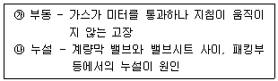
- ㉮
- ㉯
- ㉮, ㉯
- 모두 틀림
(정답률: 44%)
92. 열전대온도계에 적용되는 원리(효과)가 아닌 것은?
- 제백효과
- 틴들효과
- 톰슨효과
- 펠티에효과
(정답률: 54%)
93. 물리적 가스분석계 중 가스의 상자성(常磁性)체에 있어서 자장에 대해 흡인되는 성질을 이용한 것은?
- SO2 가스계
- O2 가스계
- CO2 가스계
- 기체 크로마토그래피
(정답률: 60%)
94. 오프셋(Off-set)이 발생하기 때문에 부하변화가 작은 프로세스에 주로 적용되는 제어동작은?
- 미분동작
- 비례동작
- 적분동작
- 뱅뱅동작
(정답률: 48%)
95. 오르자트법에 의한 기체분석에서 O2의 흡수제로 주로 사용되는 것은?
- KOH 용액
- 암모니아성 CuCl2 용액
- 알칼리성 피로갈롤 용액
- H2SO4 산성 FeSO4 용액
(정답률: 67%)
96. 밀도와 비중에 대한 설명으로 틀린 것은?
- 밀도는 단위체적당 물질의 질량으로 정의한다.
- 비중은 두 물질의 밀도비로서 무차원수이다.
- 표준물질인 순수한 물은 0℃, 1기압에서 비중이 1 이다.
- 밀도의 단위는 N·s2/m4 이다.
(정답률: 56%)
97. 열전도도검출기의 측정 시 주의사항으로 옳지 않은 것은?
- 운반기체 흐름속도에 민감하므로 흐름속도를 일정하게 유지한다.
- 필라멘트에 전류를 공급하기전에 일정량의 운반기체를 먼저 흘러 보낸다.
- 감도를 위해 필라멘트와 검출실 내벽온도를 적정하게 유지한다.
- 운반기체의 흐름속도가 클수록 감도가 증가하므로, 높은 흐름속도를 유지한다.
(정답률: 73%)
98. 정오차(static error)에 대하여 바르게 나타낸 것은?
- 측정의 전력에 따라 동일 측정량에 대한 지시값에 차가 생기는 현상
- 측정량이 변동될 때 어느 순간에 지시값과 참값에 차가 생기는 현상
- 측정량이 변동하지 않을 때의 계측기의 오차
- 입력 신호변화에 대해 출력신호가 즉시 따라가지 못하는 현상
(정답률: 39%)
99. 페러데이(Faraday)법칙의 원리를 이용한 기기분석 방법은?
- 전기량법
- 질량분석법
- 저온정밀 증류법
- 적외선 분광광도법
(정답률: 71%)
100. 기체 크로마토그래피의 분리관에 사용되는 충전 담체에 대한 설명으로 틀린 것은?
- 화학적으로 활성을 띠는 물질이 좋다.
- 큰 표면적을 가진 미세한 분말이 좋다.
- 입자크기가 균등하면 분리작용이 좋다.
- 충전하기 전에 비휘발성 액체로 피복한다.
(정답률: 61%)
베르누이 방정식은 유체의 운동 에너지와 압력, 위치의 관계를 나타내는 방정식으로, 다음과 같이 표현됩니다.
P + 1/2ρv^2 + ρgh = 상수
여기서 P는 압력, ρ는 유체의 밀도, v는 유체의 속도, g는 중력 가속도, h는 유체의 위치를 나타냅니다.
이 문제에서는 정압이 주어졌으므로, P는 200 kPa로 고정됩니다. 또한, 동압이 1 kPa이므로, 유체의 위치 변화는 무시할 수 있습니다. 따라서, 베르누이 방정식은 다음과 같이 간단해집니다.
P + 1/2ρv^2 = 상수
이제 이 식을 이용하여 속도를 구해보겠습니다.
먼저, 공기의 밀도를 구해야 합니다. 공기의 밀도는 다음과 같이 구할 수 있습니다.
ρ = P/(R*T)
여기서 R은 기체상수, T는 절대온도입니다. 이 문제에서는 기체상수가 287 J/kg·K이므로, 이를 이용하여 공기의 밀도를 구할 수 있습니다.
ρ = 200/(287*(200+273)) = 0.712 kg/m^3
이제, 베르누이 방정식에 대입하여 속도를 구합니다.
P + 1/2ρv^2 = 상수
200 + 1/2*0.712*v^2 = 상수
v^2 = (상수-200)*2/0.712
v = sqrt((상수-200)*2/0.712)
여기서, 상수는 P + 1/2ρv^2 이므로, 다음과 같이 구할 수 있습니다.
P + 1/2ρv^2 = 200 + 1/2*0.712*v^2
상수 = 200 + 1/2*0.712*v^2
따라서, v를 구하기 위해서는 이 식을 이용하여 상수를 구한 후, 위의 식에 대입하여 계산하면 됩니다.
계산 결과, v는 약 36.9 m/s가 됩니다. 따라서, 정답은 36.9입니다.